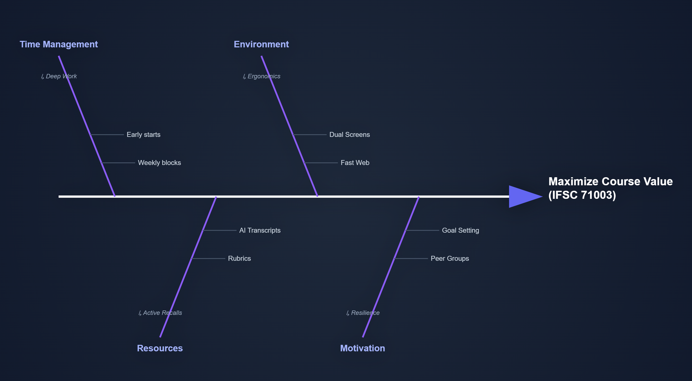

Problem: I want to get as much as possible out of taking IFSC 71003.
My fishbone categories include time management, study habits, resources, motivation, logistics, and health/energy.

Final fishbone diagram image used for HW3.
This analysis reviews which possible causes from the fishbone are reasonable and which can be excluded, and it offers improvement suggestions.
Reasonable causes: Time management (irregular shifts, lack of scheduled study blocks), competing paid work (office shifts, driving), study habits (starting work late, low deep-work time), resources (familiarity with tools, use of AI for coding and synthesis), environment (internet quality, workspace ergonomics), and health/energy (sleep patterns and breaks). These all plausibly affect course payoff and are supported by the diagram branches.
Causes likely to be excluded: Hardware failure or course content availability — the syllabus, professor materials, and lectures appear sufficient, so lack of course resources is less likely the root cause. Similarly, rare one-off events (isolated technical outages) are less central than ongoing patterns like schedule and energy.
Improvement suggestions: 1) Establish fixed weekly study blocks (short, protected deep-work sessions) to reduce schedule fragmentation. 2) Reserve at least one study block immediately after paid shifts or before sleep to avoid skipping study when tired. 3) Use AI as a productivity amplifier (prompt-engineered workflows) but keep short manual checks to preserve understanding. 4) Improve the study environment (stable internet, ergonomics) and minimize live-lecture interruptions by reviewing recordings during focused blocks. 5) Apply simple checklists and a submission checklist 48 hours before due dates to reduce last-minute rushes.